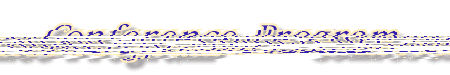

|
|
|

Agenda
Monday, June 3rd
Tutorials
Location: Holiday Inn, Pleasanton, CA
-
- 9:00 - 4:30 An Introduction to Python
- Paul DuBois (LLNL)
- 9:00 - 12:00 Python and Internet Programming
- Jim Fulton (Digicool)
- 1:30 - 4:00 Extending and Embedding Python
- Aaron Watters (AT&T)
Tuesday, June 4th
Conference Program
Lawrence Livermore National Laboratory
- 9:00 - 9:20 Introductory Address
- Robin Friedrich
- 9:20 - 9:40 Special Address - The O'Reilly Python Book
- Author - Mark Lutz
- 9:40 - 11:00 SIGs in Progress
- Database - Greg Stein
GUI - Jim Ahlstrom
Documentation & Web - Michael McLay
Matrix - Paul Dubois
Imaging - Mr. Proxy
- 11:00 - 12:00 Python Software Activity
- 12:00 - 2:00 Break for Lunch
- 2:00 - 2:30 Python 1.4 and Beyond
- Guido van Rossum
Networking Topics
- 2:30 - 3:00 Grail
- Guido van Rossum
- 3:00 - 3:30 What's in a name?
A Distributed, Federated Naming System in Python
- Martin Chilvers, David Arnold, Andy Bond, Richard Taylor
- 3:30 - 4:00 Hector: Distributed Objects in Python
- David Arnold, Andy Bond, Martin Chilvers, Richard Taylor
- 4:00 - 4:30 Using Python in a Distributed Object System
(ABB Object Management Facility)
- Daniel Larsson
- 6:00 Banquet at Willow Tree Chinese Restaurant
Wednesday, June 5th
Conference Program
Continued
Systems & Integrations
- 9:00 - 9:30 Using Emacs OO-Browser with Python
- Harri Pasanen
- 9:30 - 10:00 Python Interface with Narcisse Graphics
- Zane Motteler
- 10:00 - 10:30 Gist: A Scientific Graphics Package for Python
- Lee Busby
- 10:30 - 11:00 Building a Programmable Interface for Physics Codes Using Numeric Python
- Tser-Yuan (Brian) Yang, P. F. Dubois, Zane Motteler
- 11:00 - 11:30 Building Ariel - OpenGL GUI and Python to C
- Jim Hugunin
- 12:00 - 2:00 Luncheon at Retzlaff Winery
State of the Art
- 2:00 - 2:30 Extensibility in Python
- Manus Hand
- 2:30 - 3:00 Using SWIG to Control, Prototype, and Debug C Programs with Python
- David M. Beazley
Thursday, June 6th
Workshop
- 9:00 - 11:00 SIG Working Groups
- Documentation - Michael McLay
Programming Environment - Fred Drake
GUI - Jim Ahlstrom
- 11:00 - 12:00 Developer's Future Enhancements
- Make a Wish Foundation
-
- 12:00 - 1:30 Lunch Break
- 1:30 - 3:00 Future Enhancements (cont.)
- ... optimizing strategies for Python, a generalized object interface, meta-objects,
a functional interface for operators (operator.__and__ etc.), etc.
Last Modified: 07:00pm CDT, May 31, 1996
|